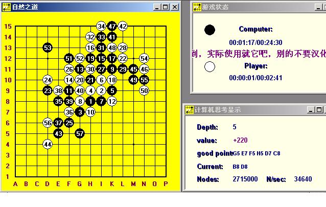
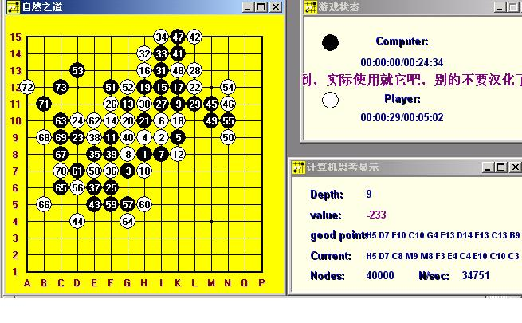
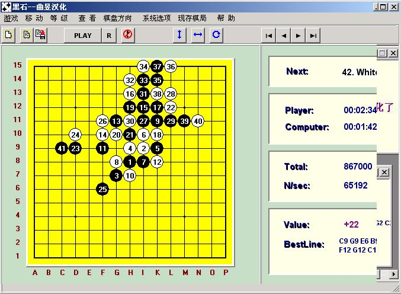

黑应该怎么走比较好
#1 黑应该怎么走比较好作者：火光冲天 发表时间：2009-2-13 0:02:08
=======上图对应的爱五子棋谱代码如下，以便你拆解：========
h8i9g7h9j9i10i8g8j11h7f9j8g11f10i12h13j12j10h12g10h10k12d9d10f6f11
======================================================
大家帮我拆几手，谢谢
#2 Re:黑应该怎么走比较好作者：聂淼 发表时间：2009-2-13 0:29:44
好久没下棋了，斜月下的不多，你能确定前面２６手是最善手吗？#3 Re:黑应该怎么走比较好作者：千羽鹤 发表时间：2009-2-13 0:54:04
以前我也想把这个24拆成必胜，实在不行#4 Re:黑应该怎么走比较好作者：nara 发表时间：2009-2-13 22:29:25
=======上图对应的爱五子棋谱代码如下，以便你拆解：========
h8i9g7h9j9i10i8g8j11h7f9j8g11f10i12h13j12j10h12g10h10k12d9d10f6f11i11
======================================================
这个27应该可以杀吧,我没细看,你再拆拆看.
#5 Re:黑应该怎么走比较好作者：wrwak 发表时间：2009-2-14 14:45:32
黑棋优势虽然大 但是白棋左上有杀 黑棋要解杀 解杀后白棋似乎没有防

53的选择比较关键
［ 有志青年 于 2009-2-14 15:21:40 时奖励此帖[金币加 20 威望加1］
#6 Re:黑应该怎么走比较好作者：nara 发表时间：2009-2-14 23:55:58
楼上的兄弟根本没有认真分析，纯黑石计算，无意义的冲四多，有些防守不是最强的，两张图也是有问题的。而且还能分析的头头是道，呵呵！有志大哥居然还奖励，我晕了。。。。。。。。。。
估计楼上的29也是跟黑石走的吧，你看看我选择的这个29怎么样？呵呵！！！软件只是辅助的工具，做出最后判断的还是我们自己。
=======上图对应的爱五子棋谱代码如下，以便你拆解：========
h8i9g7h9j9i10i8g8j11h7f9j8g11f10i12h13j12j10h12g10h10k12d9d10f6f11i11k13c9
======================================================
［ 有志青年 于 2009-2-16 8:20:12 时奖励此帖[金币加 20 威望加1］
#7 Re:黑应该怎么走比较好作者：wrwak 发表时间：2009-2-15 8:18:36
黑石减少我分析时间 你不过也就是变着软件在分析而已 交换掉右上角白棋 黑棋胜一定在下面 为了让软件计算集中 才走掉右上
#8 Re:黑应该怎么走比较好作者：wrwak 发表时间：2009-2-15 8:19:22
有些人用软分析还不承认 可笑 
你的点不过是黑石3.7的分析
#9 Re:黑应该怎么走比较好作者：火光冲天 发表时间：2009-2-15 12:39:23
拆完了，谢谢大家#10 Re:黑应该怎么走比较好作者：小丸.net 发表时间：2009-2-15 15:08:31
wrwak的分析确实存在着一些问题，我发现了54有个更强的防点。这个54以后并没有找到55强的杀法。请指教。
#11 Re:黑应该怎么走比较好作者：wrwak 发表时间：2009-2-15 16:58:19
55手 H6跳三#12 Re:Re:黑应该怎么走比较好作者：nara 发表时间：2009-2-15 23:49:43
引用：
原文由 wrwak 发表于 2009-2-15 8:18:36 :黑石减少我分析时间 你不过也就是变着软件在分析而已 交换掉右上角白棋 黑棋胜一定在下面 为了让软件计算集中 才走掉右上
你觉得我说的那些话,哪句错了.可以一句一句指出.别回避!
其次分析下你话,"黑石减少我分析时间"没有问题,大家拆棋的时候,软件辅助,很正常的,我也用软件辅助的.我后面已说(软件辅助,自己判断怎么样?)"你不过也就是变着软件在分析而已"那你怎么没有借着软件辅助分析,而是去直接走它选的点呢?(所以我说你没有动脑去认真分析),那说明我至少还是有自己的想法的吧.我说说我当初的分析,28后算了下这个右上局部没有杀,我立刻把29的选择放到了左下,试到了这个29,用软件算一下防守,没问题,就行了."交换掉右上角白棋 黑棋胜一定在下面 为了让软件计算集中 才走掉右上 "你既然知道黑棋胜在下面,那你还去交换什么?交换的意义什么?你这样胡乱的交换会不会影响到左下原本的杀呢?有没有想过?或许你只是为了把有冲的都冲掉,让黑石好算点而已,其他的你根本没有想.我们有时候用软件把一些无意义的冲四冲掉是可以的,这样可以方便软件计算,不过能影响到后面局面的点不能乱冲的,也不能胡乱交换的.还有把变化贴出来的时候,那些软件冲的无意义的四就别一块贴出来(地毯除外).把主要的点和思路表达出来就可以了.
引用：
原文由 wrwak 发表于 2009-2-15 8:19:22 :
有些人用软分析还不承认 可笑
你的点不过是黑石3.7的分析
"有些人用软分析还不承认 可笑 "我从来没说过我没有用软件辅助分析(其实我最后那句已经有表明这个意思:我也是用软件辅助的),不过最后的判断还是我自己作出的,没有一味的照搬.(如果照搬,估计结果跟你一样).不过你到现在也没有勇气承认自己犯的错,还一味的狡辩(从你回复的言辞之中可以看出,没有第一时间承认错误和分析原因,而是立刻风头一转来说我怎么怎么.)来替自己开脱!(除非你还觉得你的图没有问题,你的分析也是对的,那我也没有办法).“你的点不过是黑石3.7的分析 ”还有你这张右上乱冲后的41跟我29直接下41位置是一样的吗?我选29的思路上面已提到,并非你所想的这样,按软件下到这里才发现的.我是根据你的回复来说明的。就事论事。
错其实并没有什么,每个人都会犯错误,大家都是从无知和错误中走过来的,我们只是需要勇气去面对我们的错误和缺点,而不是去回避,这样才能改进自我。
平时限于自己水平有限,对于论坛棋友提出的疑问,我也只能尽自己的微薄之力来帮忙解决其中一些简单的问题(难的留给高手们).我前面发的那些简单的谱,如果有错误不足之处,还望大家指出,共同交流,共同进步吗!
至于wrwak兄,我为什么今天要花这么多的时间说这么多呢?甚至有些言辞有点激烈了。因为类似这样的错误他已经不是第1次了,前面在妖刀版块他也发了不少有疑问的谱,对于提出的疑问,有些至今都没有回答和作出解释,而是采用回避的方式!(这个失落刀版主应该也是了解的)!大家也可以去看看!
如果想打口水战，那可以直接停了，因为实在没有意思。（还有一段话先发去一个地方）
#13 Re:黑应该怎么走比较好作者：借力打力博柔派 发表时间：2009-2-16 1:01:34
黑石不错，可惜 算法有问题，走的太慢了。#14 Re:黑应该怎么走比较好作者：wrwak 发表时间：2009-2-16 13:40:05
我照搬软件？ 我前几天连赢了3把少帅 照搬能做到？
无禁手我也可以下 我没有错 错的是有些人看我加分不爽，有问题你提出就可以了 不要装B
你的语气比起后面那位差多了 失落刀有终结者想的防全面一点正常 无禁手没软件你们就不敢唧唧歪
歪了吗
［ 有志青年 于 2009-2-16 20:00:15 时惩罚此帖，发帖者[金币减20 威望减1 ］
请注意文明用语
#15 Re:Re:黑应该怎么走比较好作者：nara 发表时间：2009-2-16 18:14:23
引用：
原文由 wrwak 发表于 2009-2-16 13:40:05 :我照搬软件？ 我前几天连赢了3把少帅 照搬能做到？
无禁手我也可以下 我没有错 错的是有些人看我加分不爽，有问题你提出就可以了 不要装B
你的语气比起后面那位差多了 失落刀有终结者想的防全面一点正常 无禁手没软件你们就不敢唧唧歪
歪了吗
跟你这样的人交流困难在哪里?就是你喜欢乱扯,不是正视问题而论.举个例子:"我前几天连赢了3把少帅"
"无禁手我也可以下",我想问一下,你说这些的意思是什么?跟讨论的问题有什么联系?
还是分析下你的话
"我照搬软件？"至少在我看来这个右上局部下的没有意义,你自己也说了,杀在下面,那为什么不直接去找杀呢?难道就是纯粹为了方便软件计算?那你那些无意义的棋,比如说有些没意义的冲四,就别一块贴出来.对不对?不然总让人觉得你是在照搬软件,大家也可以用4.0的试试,这个右上局部是不是跟软件一样的.
"我前几天连赢了3把少帅 照搬能做到？"这句什么意思,是说明你很厉害吗?跟我讨论的谱有什么关系吗?
"无禁手我也可以下"怎么会撤到这句话的呢(太离谱)?真是莫名其妙,你下无禁手就无禁手了,跟我们现在说的有什么联系吗?所以说跟你这样的人说话累.根本不知道又撤哪里去了.哎..........
"我没有错 错的是有些人看我加分不爽"你前面那个瑞星的解答,确实没有问题,正确的.也没有人看你不爽啊.加分奖励应该的.对不对?我也没说什么吧.而这个谱确实有疑问啊!
"有问题你提出就可以了"我上篇文章不是提了很多问题了吗?只是你一直在回避,没有回答啊?摘录其中一句"你既然知道黑棋胜在下面,那你还去交换什么?交换的意义什么?你这样胡乱的交换会不会影响到左下原本的杀呢?有没有想过?"
"不要装B"这句话估计我说到你的短处了,急了!!!脏话都出来了!哎......
"你的语气比起后面那位差多了"语气确实有点激烈了,那是因为你不是第一次出现这样的情况了,而且你的谱确实有疑问啊.
"失落刀有终结者想的防全面一点正常"怎么又撤到失落刀有终结者了,跟你说话就是累,一会这里撤一下少帅怎么怎么的,一会那里撤一下我下无禁手怎么怎么的,再说了,终结者也会错算漏算的,有些高手拆棋是纯人脑的,拆的也很好的.不知又被你撤哪里了.
"无禁手没软件你们就不敢唧唧歪歪了吗"本人确实不下无禁手,对无禁手也不了解,也不敢发表什么见解.这有什么问题啊?我又晕了,你怎么又撤到这里啦.
太累了.不跟你兜了.你这样兜的没完没了了.你也可以就我说的分 一部分 一部分 加以说明解释,有什么疑问可以交流.千万别这里撤的那里撤的.